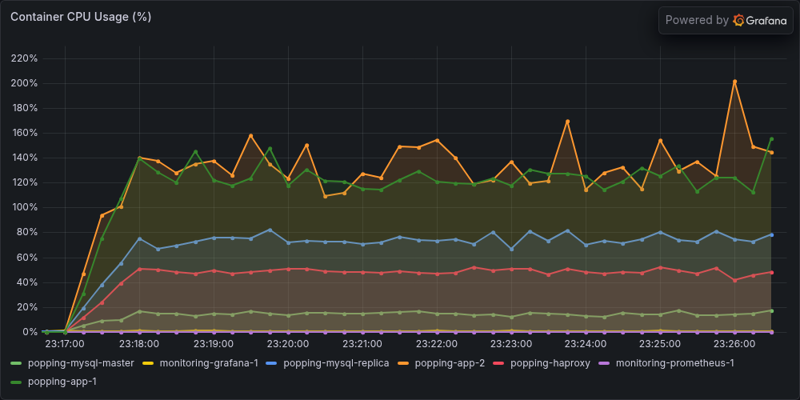
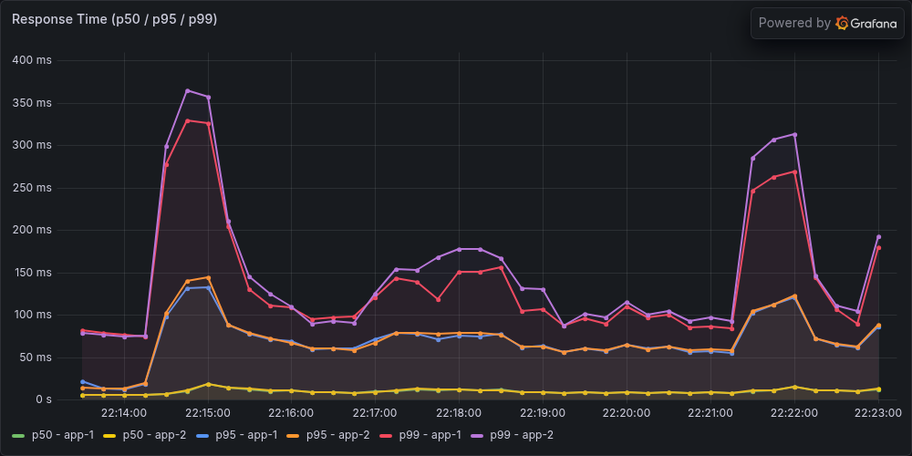
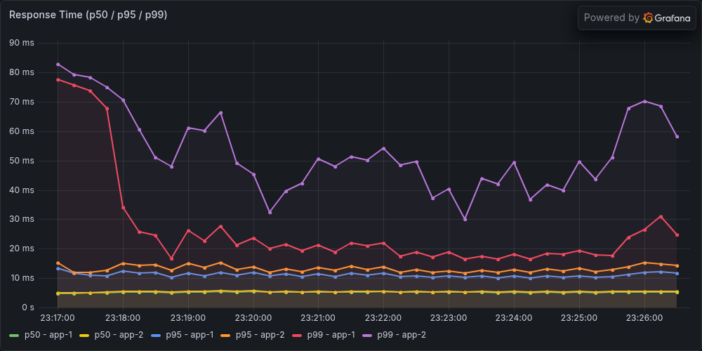
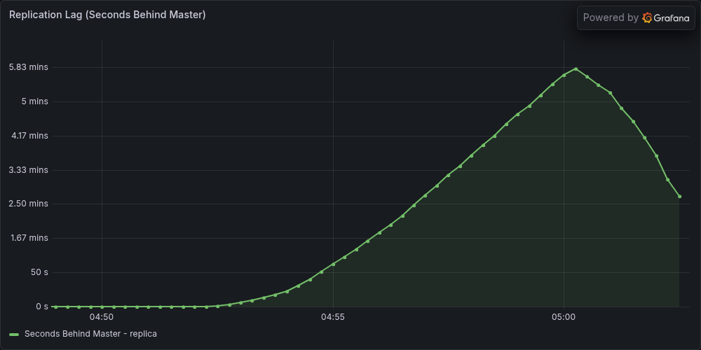
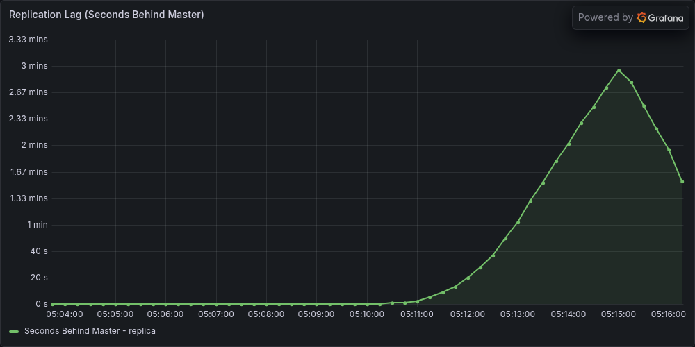

MySQL Read Replica
Scale Out으로 App 병목을 해소하자 단일 MySQL CPU가 100%에 도달했습니다.
읽기/쓰기 분리로 병목을 해소하고, Replication Lag은 병렬 복제와 Sticky Primary로 대응했습니다.
병목이 App에서 MySQL로 이동했습니다
커뮤니티 서비스 특성상 읽기 트래픽이 약 90%를 차지하는데, 단일 MySQL(1cpu)이 읽기와 쓰기를 모두 처리하면서 CPU가 포화됐습니다. 읽기 쿼리를 Replica로 분산하면 Master 부하가 줄어 병목을 해소할 수 있다고 판단했습니다.
| 단계 | TPS | Avg 응답시간 | 병목 |
|---|---|---|---|
| 댓글 트리 최적화 후 | 274/s | 867ms | App CPU |
| Scale Out 후 | 527/s | 32ms | MySQL CPU ← 현재 |
아키텍처 변경
Before: Client → HAProxy ─┬─ App-1 ─┬─ MySQL (1cpu/1GB, Read+Write)
└─ App-2 ─┘
After: Client → HAProxy ─┬─ App-1 ─┬─ Master (1cpu/1GB) ── Write
└─ App-2 ─┤
└─ Replica (1cpu/1GB) ── Read (~90%)
↑ GTID Replication
서비스 코드 변경 없는 읽기/쓰기 자동 라우팅
Spring 6.1.2+의 LazyConnectionDataSourceProxy를 사용했습니다.
서비스 클래스에 이미 @Transactional(readOnly = true)가 올바르게 선언되어 있어,
DataSource 설정만 추가하면 자동으로 라우팅이 동작합니다.
핵심 구현 (~20줄)
@Bean
@Primary
public DataSource dataSource(
@Qualifier("writeDataSource") DataSource write,
@Qualifier("readDataSource") DataSource read) {
LazyConnectionDataSourceProxy proxy =
new LazyConnectionDataSourceProxy(write);
proxy.setReadOnlyDataSource(read);
return proxy;
}
// 서비스 코드는 그대로
@Transactional(readOnly = true) // → Replica
public PostDetailResponse getPost(Long postId) { ... }
public void createPost(PostCreateRequest req) { ... } // → Master
왜 LazyConnectionDataSourceProxy인가
| 비교 | AbstractRouting | LazyConnection ✓ |
|---|---|---|
| 커넥션 획득 시점 | TX 시작 시 (readOnly 미확정) | 첫 SQL 실행 시 (readOnly 확정) |
| ThreadLocal / AOP | 필요 | 불필요 |
| 코드량 | ~50줄 | ~20줄 |
커넥션 획득을 첫 SQL 실행까지 지연하므로, 그 시점에는 readOnly 플래그가 확정되어 자연스럽게 올바른 DataSource로 라우팅됩니다.
* @ConditionalOnProperty로 Replica가 없는 CI/단일 DB 환경에서는 설정 자체가 로딩되지 않아 기존 구성과 호환됩니다.
GTID 기반 복제를 선택한 이유는 Docker 컨테이너 재시작 시에도 binlog 포지션을 자동 추적하기 때문입니다.
모든 읽기 엔드포인트에서 66~72% 응답시간 감소
동일 조건(500 VUser, 10분, 읽기 90% + 쓰기 10% 워크로드)으로 부하테스트를 재실행했습니다. 쓰기 경로도 Master의 읽기 경합이 사라지면서 간접적으로 개선됐습니다 — 게스트 글쓰기 179ms → 110ms(-39%), 댓글 좋아요 52ms → 15ms(-71%).
| 지표 | Before (단일 MySQL) | After (+ Replica) | 변화 |
|---|---|---|---|
| 평균 응답시간 | 32ms | 10ms | -67.1% |
| P50 / P95 | 27ms / 125ms | 7ms / 36ms | -74.1% / -71.2% |
| P99 응답시간 | 237ms | 80ms | -66.2% |
| 최대 응답시간 | 1,338ms | 469ms | -64.9% |
| Master CPU | 약 100% | 약 25% | Replica가 ~75% 흡수 |
| TPS | 527.0/s | 538.9/s | +2.3% |
* TPS가 소폭 상승에 그친 이유: JMeter 시나리오가 Think Time과 고정 스레드 수(500)로 구성되어, 응답이 빨라져도 다음 요청까지 대기가 있기 때문입니다. 따라서 이번 개선의 핵심 지표는 응답시간과 Master 부하 감소입니다.
DB CPU 사용률 변화

단일 MySQL이 100%에 고정되어 포화 상태. DB가 병목이라 App CPU가 노는 구간도 보인다.

Master가 ~25%로 낮아지고 Replica가 ~75%로 읽기 부하를 흡수. App CPU도 더 균일하게 활용된다.
응답시간(Tail Latency) 변화

P99가 100~350ms 범위에서 출렁이고 P95도 간헐적 스파이크. 읽기/쓰기 쿼리 경합으로 불안정하다.

P99가 20~80ms로 안정화되고 P50은 7ms를 일정하게 유지. 쿼리 큐잉이 해소된 결과다.
Replication Lag — "내가 쓴 글이 안 보여요"
부하테스트 중 Replication Lag이 평균 104초, 최대 348초까지 발생했습니다. 커뮤니티 특성상 다른 사람의 글이 수 초 늦게 보이는 것은 허용되지만, 사용자가 방금 쓴 자신의 글이 보이지 않는 것은 버그처럼 느껴집니다 (Read-your-own-writes 문제). 두 가지 전략으로 대응했습니다.
전략 1 — 병렬 복제 (Lag 자체를 줄임)
Replica의 SQL Thread는 기본적으로 단일 스레드로 binlog를 재생합니다.
LOGICAL_CLOCK 방식은 Master에서 같은 group commit에 포함된(서로 충돌하지 않는) 트랜잭션을 Replica에서도 병렬로 적용합니다.
mysql-replica:
command:
- "--replica-parallel-workers=2"
- "--replica-parallel-type=LOGICAL_CLOCK"
병렬 복제 + Sticky Primary 결합 검증에서 Lag 평균 104초 → 26초(-75%), 최대 348초 → 177초(-49%). Lag 감소는 병렬 복제로, 쓰기 직후 정합성은 Sticky Primary로 보완했습니다.
전략 2 — Sticky Primary (정합성 보장)
쓰기 트랜잭션이 커밋되면 3초 TTL의 STICKY_PRIMARY 쿠키를 발급합니다.
이후 3초간 해당 사용자의 읽기만 Master로 라우팅되어, 방금 쓴 데이터를 즉시 읽을 수 있습니다.
Request → StickyPrimaryFilter (Cookie → ThreadLocal)
→ LazyConnectionDataSourceProxy
├─ @Transactional → Master (항상)
└─ @Transactional(readOnly)
├─ sticky=true → Master (3초간)
└─ sticky=false → Replica (평상시)
→ StickyPrimaryAspect (afterCommit → Cookie 발급)
Cookie 방식(vs HttpSession)이라 비로그인 게스트에게도 동작하고 세션 스토어 없이 Scale Out과 호환됩니다.
쿠키 발급은 AOP afterCommit 콜백으로, 롤백 시에는 발급되지 않습니다.
| 지표 | Before (workers=1) | After (병렬 복제 + Sticky Primary) | 변화 |
|---|---|---|---|
| Lag 평균 | 104s | 26s | -75% |
| Lag 최대 | 348s | 177s | -49% |
| 복구 시간 | ~2.75분 | ~1.5분 | -45% |
| P95 / P99 (750 VUser) | 830ms / 1,241ms | 747ms / 1,168ms | -10% / -5.9% |
* Lag 검증 테스트는 Lag을 더 크게 유발하기 위해 750 VUser(다른 지표는 500 VUser)로 실행했습니다.
Replication Lag 변화

단일 SQL Thread(workers=1)의 순차 처리로 Lag이 최대 348초까지 상승. 종료 후 복구까지 약 2.75분.

병렬 복제(workers=2)로 binlog replay가 빨라져 최대 177초로 절반 수준. 복구도 약 1.5분으로 단축.
왜 이 조합인가 — 커뮤니티 서비스의 비대칭적 일관성 요구
커뮤니티 포럼은 결제 시스템과 달리 전체 정합성은 Eventual로 충분하지만, 자기 자신의 쓰기에 대해서만은 즉시 일관성이 필요합니다. Semi-sync Replication은 모든 쓰기에 Replica ACK 대기를 강제해 과하고, 전체 Master 라우팅은 Replica 도입을 무의미하게 만듭니다.
"전체 시스템에 일관성 비용을 부과하지 않으면서, '내 글이 안 보이는' 문제만 정확히 해결합니다 — 코드 4개 파일 추가로."
전체 분석 과정이 궁금한가요?
테스트 환경 구성, GTID Replication 설정, Sticky Primary 구현 세부사항을 Velog에 기록했습니다.